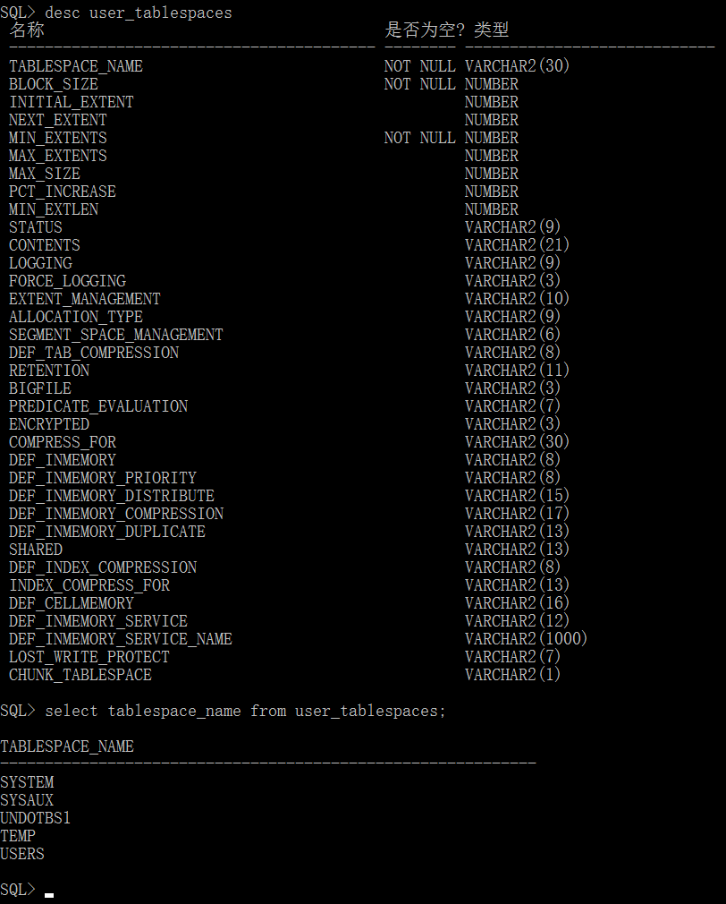
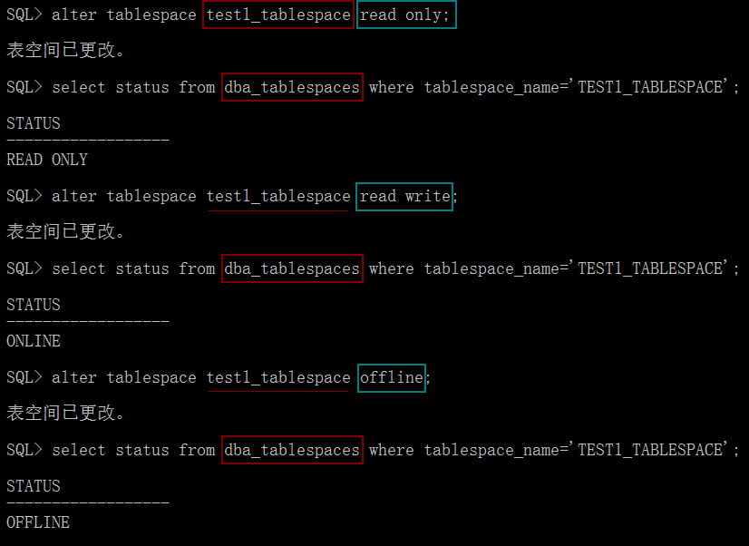

Oracle
甲骨文公司，全称甲骨文股份有限公司(甲骨文软件系统有限公司)，是全球最大的企业级软件公司，总部位于美国加利福尼亚州的红木滩。1989年正式进入中国市场。2013年，甲骨文已超越 IBM ，成为继 Microsoft 后全球第二大软件公司。
安装与卸载
- 安装
https://www.oracle.com/downloads/
- 卸载
# windows系统运行
deinstall/deinstall.bat
用户与表空间
[!TIP|style:flat|label:系统用户]
sys, system。密码为安装软件时设置的密码
sysman。密码为安装软件时设置的密码
scott。密码默认为tiger
权限依次从高到低
- 使用system用户登录
# 打开SQL Plus工具
[username/password] [@server] [as sysdba|sysoper]
# system/pw @orcl as sysdba
# orcl 就是自己设置的服务名
不区分大小写

- 查看登录用户
show user
# 结果 USER 为 "SYS"
数据字典
desc dba_users

查看有哪些用户，注意SQL语句要以 ; 分号结束。
select username from dba_users;
- 启用scott用户
默认情况下，该用户为锁定状态。
# 启用用户的语句
alter user uesename account unlock
# alter user username account lock
ORA-01918: 用户 'SCOTT' 不存在
[!TIP|style:flat|label:表空间]
数据库与表空间
表空间实际上是数据库的逻辑存储空间，可以理解为在数据库中开辟的一个空间，用来存储数据库对象。一个数据库可以由多个表空间构成。
此特点也是与MySQL等数据库的主要区别。Oracle的很多优化也是通过表空间来实现的。
表空间与数据文件
表空间实际上是由多个数据文件构成的，数据文件的大小和位置可以由用户自己定义。
表空间可分为：永久表空间、临时表空间、UNDO表空间
- 永久表空间
数据库中需要永久化存储的一些对象。比如表、视图、存储过程等
- 临时表空间
数据库操作过程中，中间执行的过程，执行结束后，存放的内容将被自动释放掉。不进行永久性的保存。
- UNDO表空间
用于保存事务所修改的旧址，即保存修改之前的数据。可以利用此功能实现回滚等操作。
查看用户的表空间
# 系统用户登录查看的数据字典
dba_tablespaces
# 普通用户登录查看的数据字典
user_tablespaces
- 系统用户


SYSTEM: 系统表空间
SYSAUX: 辅助表空间，安装Oracle示例使用的表空间。
UNDOTBS1: 社交类型表空间
TEMP:
USERS:
- 普通用户

# 系统用户登录查看的数据字典
dba_users
# 普通用户登录查看的数据字典
user_users

- 设置用户的默认或临时表空间
ALTER USER username DEFAULT|TEMPORARY TABLESPACE tablespace_name
# alter user system default tablespace xxx
[!TIP|style:flat|label:单选]
在Oracle数据库安装完成后，system用户的默认表空间和临时表空间分别是：
system, temp
创建表空间
CREATE [TEMPORARY] TABLESPACE
tablespace_name
TEMPFILE|DATAFILE `xx.dbf` SIZE xx
xx.dbf如未指定路径，将被直接存储在Oracle的安装默认目录中。
# 创建一个大小为10M的永久表空间
create tablespace test1_tablespace
datafile `test1file.dbf` size 10m;
# 创建一个大小为10M的临时表空间
create temporary tablespace temp_test_tablespace
tempfile `tempfile1.dbf` size 10m;
查看表空间路径等操作


修改表空间
[!TIP|style:flat|label:修改表空间的状态]
脱机状态
读写状态
设置联机或脱机状态
# 修改表空间的在线状态
ALTER TABLESPACE tablespace_name
ONLINE|OFFLINE;
脱机状态的表空间无法使用。

查看online_status

# 修改表空间的读写状态
ALTER TABLESPACE tablespace_name
READ ONLY|READ WRITE

[!TIP|style:flat|label:修改数据文件]
增加数据文件
删除数据文件
# 向tablespace_name中添加一个文件
ALTER TABLESPACE tablespace_name
ADD DATAFILE 'xx.dbf' SIZE xx;

# 删除数据文件
ALTER TABLESPACE tablespace_name
DROP DATAFILE 'filename.dbf'
[!WARNING|style:flate|label:注意]
不能删除表空间的第一个数据文件
如果需要删除第一个数据文件，则需将整个表空间删除。
删除表空间
DROP TABLESPACE
tablespace_name [INCLUDING CONTENTS]
# 只删除表空间，不删除数据文件 drop tablespace test1_tablespace
# 删除表空间和文件 drop tablespace test1_tablespace including contents
管理表
[!TIP|style:flat|label:认识表]
表是存储数据的基本存储单位
表是二维结构，由行(记录)和列(域和字段)组成
约定
1、每一列数据必须具有相同数据类型。
2、列名是唯一的
3、每一行数据的唯一性
数据类型
字符型、数值型、日期型、其他类型
| 字符型 | n最大值 | 说明 |
|---|---|---|
| CHAR(n) | 2000 | n为10时，输入长度3字符的字符将补齐7个空格，易造成空间浪费 |
| NCHAR(n) | 1000 | 按Unicode格式存放数据，常用于存储汉字 |
| VARCHAR2(n) | 4000 | 存储可变长度数据类型，相对CHAR更节约空间 |
| NVARCHAR2(n) | 2000 | 支持Unicode格式存放 |
| 数值型 | 说明 |
|---|---|
| NUMBER(p,s) | p有效数字；s小数点后位数，支持正负数 |
| FLOAT(n) | 用于存储二进制数据，能表示二进制位数1-126位。转换成10进制，则需乘以0.30103 |
NUMBER(5, 2)
# 有效数字5位，保留2位小数，如123.45
| 日期型 | 说明 |
|---|---|
| DATE | 范围：公元前4712年1月1日，至公元9999年12月31日，精确到秒 |
| TIMESTAMP |
| 其他类型 | 最大能存储 | 说明 |
|---|---|---|
| BLOB | 4GB数据 | 以二进制格式存储 |
| CLOB | 4GB数据 | 以字符串形式存储 |